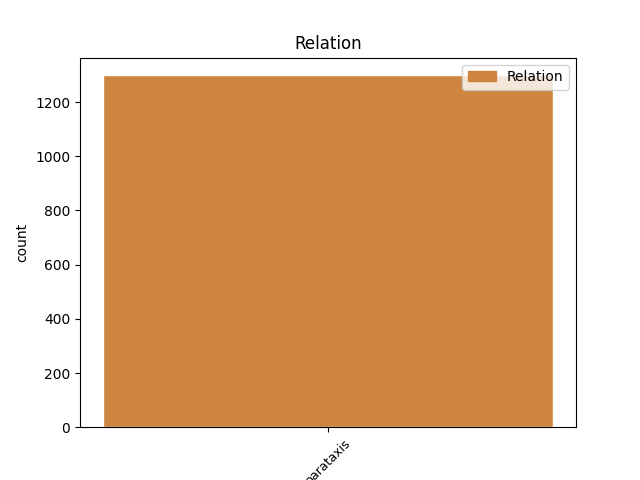
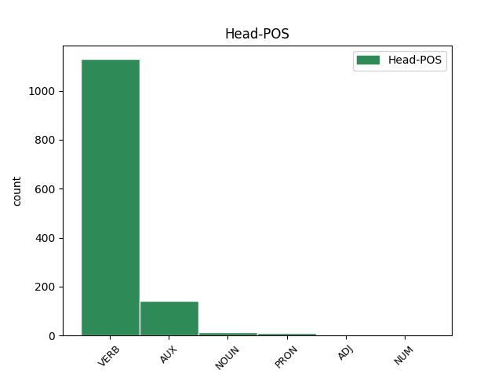
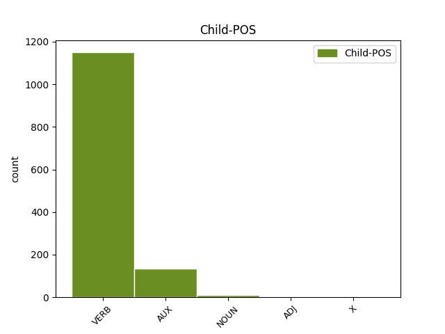

Distribution of features within this leaf



Agreement Rules sorted by frequency.
- When the dependent token is the parataxis(parataxis) of the head token, and the dependent token is VERB.
1 Eg _ _ _ _ 0 _ _ _
2 eri verie AUX _ Mood=Ind|Number=Sing|Person=3|Tense=Pres|VerbForm=Fin 0 _ _ _
3 37 _ _ _ _ 0 _ _ _
4 ár _ _ _ _ 0 _ _ _
5 og _ _ _ _ 0 _ _ _
6 elsti _ _ _ _ 0 _ _ _
7 pakkarin _ _ _ _ 0 _ _ _
8 umborð _ _ _ _ 0 _ _ _
9 , _ _ _ _ 0 _ _ _
10 so _ _ _ _ 0 _ _ _
11 sum _ _ _ _ 0 _ _ _
12 heild _ _ _ _ 0 _ _ _
13 er vere VERB _ Mood=Ind|Number=Sing|Person=3|Tense=Pres|VerbForm=Fin|Voice=Act 2 parataxis _ _
14 talan _ _ _ _ 0 _ _ _
15 um _ _ _ _ 0 _ _ _
16 ungt _ _ _ _ 0 _ _ _
17 fólk _ _ _ _ 0 _ _ _
18 . _ _ _ _ 0 _ _ _
1 Finn finn VERB _ Mood=Imp|Number=Sing|Person=2|VerbForm=Fin 0 _ _ _
2 tín _ _ _ _ 0 _ _ _
3 dreymabil _ _ _ _ 0 _ _ _
4 á _ _ _ _ 0 _ _ _
5 www.bilimport.fo _ _ _ _ 0 _ _ _
6 Nú nú AUX _ Mood=Imp|Number=Sing|Person=2|VerbForm=Fin 1 parataxis _ _
7 leygardagin _ _ _ _ 0 _ _ _
8 verður _ _ _ _ 0 _ _ _
9 Formula _ _ _ _ 0 _ _ _
10 - _ _ _ _ 0 _ _ _
11 kappingin _ _ _ _ 0 _ _ _
12 , _ _ _ _ 0 _ _ _
13 sum _ _ _ _ 0 _ _ _
14 er _ _ _ _ 0 _ _ _
15 FM _ _ _ _ 0 _ _ _
16 í _ _ _ _ 0 _ _ _
17 inniróðri _ _ _ _ 0 _ _ _
18 . _ _ _ _ 0 _ _ _
1 Misti misti VERB _ Mood=Imp|Number=Sing|Person=2|VerbForm=Fin 0 _ _ _
2 foreldrini _ _ _ _ 0 _ _ _
3 í _ _ _ _ 0 _ _ _
4 ferðsluvanlukkum _ _ _ _ 0 _ _ _
5 – _ _ _ _ 0 _ _ _
6 Ja _ _ _ _ 0 _ _ _
7 , _ _ _ _ 0 _ _ _
8 veruligi _ _ _ _ 0 _ _ _
9 pápi pápi NOUN _ Mood=Imp|Number=Sing|Person=2|VerbForm=Fin 1 parataxis _ _
10 mín _ _ _ _ 0 _ _ _
11 doyði _ _ _ _ 0 _ _ _
12 í _ _ _ _ 0 _ _ _
13 eini _ _ _ _ 0 _ _ _
14 ferðsluvanlukku _ _ _ _ 0 _ _ _
15 , _ _ _ _ 0 _ _ _
16 tá _ _ _ _ 0 _ _ _
17 ið _ _ _ _ 0 _ _ _
18 eg _ _ _ _ 0 _ _ _
19 var _ _ _ _ 0 _ _ _
20 fimm _ _ _ _ 0 _ _ _
21 ára _ _ _ _ 0 _ _ _
22 gamal _ _ _ _ 0 _ _ _
23 . _ _ _ _ 0 _ _ _
1 Tað _ _ _ _ 0 _ _ _
2 hevði _ _ _ _ 0 _ _ _
3 eydnast _ _ _ _ 0 _ _ _
4 Dánjali _ _ _ _ 0 _ _ _
5 við _ _ _ _ 0 _ _ _
6 einum _ _ _ _ 0 _ _ _
7 unduri _ _ _ _ 0 _ _ _
8 , _ _ _ _ 0 _ _ _
9 hugsaði hugsaði VERB _ Mood=Ind|Number=Sing|Person=3|Tense=Past|VerbForm=Fin|Voice=Act 0 _ _ _
10 hann _ _ _ _ 0 _ _ _
11 , _ _ _ _ 0 _ _ _
12 rætt rætts ADJ _ Mood=Ind|Number=Sing|Person=3|Tense=Past|VerbForm=Fin|Voice=Act 9 parataxis _ _
13 sum _ _ _ _ 0 _ _ _
14 við _ _ _ _ 0 _ _ _
15 Dávidi _ _ _ _ 0 _ _ _
16 og _ _ _ _ 0 _ _ _
17 Goliat _ _ _ _ 0 _ _ _
18 . _ _ _ _ 0 _ _ _
Disagree Examples:
1 Nú _ _ _ _ 0 _ _ _
2 eg _ _ _ _ 0 _ _ _
3 hugsi hugsi VERB _ Mood=Opt|Number=Sing|Person=3|Tense=Past|VerbForm=Fin|Voice=Act 0 _ _ _
4 um _ _ _ _ 0 _ _ _
5 tað _ _ _ _ 0 _ _ _
6 burdi _ _ _ _ 0 _ _ _
7 eg _ _ _ _ 0 _ _ _
8 farið farið VERB _ Mood=Ind|Number=Sing|Person=2|Tense=Past|VerbForm=Fin|Voice=Act 3 parataxis _ _
9 at _ _ _ _ 0 _ _ _
10 importera _ _ _ _ 0 _ _ _
11 meira _ _ _ _ 0 _ _ _
12 . _ _ _ _ 0 _ _ _
1 Í _ _ _ _ 0 _ _ _
2 grein _ _ _ _ 0 _ _ _
3 7 _ _ _ _ 0 _ _ _
4 í _ _ _ _ 0 _ _ _
5 Augsburgsku _ _ _ _ 0 _ _ _
6 Trúarjáttanini _ _ _ _ 0 _ _ _
7 , _ _ _ _ 0 _ _ _
8 ið _ _ _ _ 0 _ _ _
9 er _ _ _ _ 0 _ _ _
10 partur _ _ _ _ 0 _ _ _
11 av _ _ _ _ 0 _ _ _
12 trúarjáttan _ _ _ _ 0 _ _ _
13 føroysku _ _ _ _ 0 _ _ _
14 fólkakirkjunnar _ _ _ _ 0 _ _ _
15 , _ _ _ _ 0 _ _ _
16 stendur stendu VERB _ Mood=Ind|Number=Sing|Person=3|Tense=Pres|VerbForm=Fin|Voice=Pass 0 _ _ _
17 : _ _ _ _ 0 _ _ _
18 “ _ _ _ _ 0 _ _ _
19 Somuleiðis _ _ _ _ 0 _ _ _
20 læra _ _ _ _ 0 _ _ _
21 tey teyn VERB _ Case=Nom|Number=Plur|Person=2|PronType=Prs 16 parataxis _ _
22 , _ _ _ _ 0 _ _ _
23 at _ _ _ _ 0 _ _ _
24 tað _ _ _ _ 0 _ _ _
25 altíð _ _ _ _ 0 _ _ _
26 fer _ _ _ _ 0 _ _ _
27 at _ _ _ _ 0 _ _ _
28 vera _ _ _ _ 0 _ _ _
29 ein _ _ _ _ 0 _ _ _
30 heilag _ _ _ _ 0 _ _ _
31 kirkja _ _ _ _ 0 _ _ _
32 . _ _ _ _ 0 _ _ _
1 Eg _ _ _ _ 0 _ _ _
2 kann kunnan#1 VERB _ Mood=Ind|Number=Sing|Person=1|Tense=Pres|VerbForm=Fin|Voice=Act 0 _ _ _
3 orða _ _ _ _ 0 _ _ _
4 tað _ _ _ _ 0 _ _ _
5 uppá _ _ _ _ 0 _ _ _
6 hendan _ _ _ _ 0 _ _ _
7 mátan _ _ _ _ 0 _ _ _
8 : _ _ _ _ 0 _ _ _
9 Ateisma _ _ _ _ 0 _ _ _
10 er vere AUX _ Mood=Ind|Number=Sing|Person=3|Tense=Pres|VerbForm=Fin 2 parataxis _ _
11 ein _ _ _ _ 0 _ _ _
12 meining _ _ _ _ 0 _ _ _
13 . _ _ _ _ 0 _ _ _
1 Í _ _ _ _ 0 _ _ _
2 Sandavági _ _ _ _ 0 _ _ _
3 vóru _ _ _ _ 0 _ _ _
4 tey teyt VERB _ Mood=Imp|Number=Sing|Person=2|VerbForm=Fin 0 _ _ _
5 bæði _ _ _ _ 0 _ _ _
6 blýð _ _ _ _ 0 _ _ _
7 og _ _ _ _ 0 _ _ _
8 týð _ _ _ _ 0 _ _ _
9 sum _ _ _ _ 0 _ _ _
10 altíð _ _ _ _ 0 _ _ _
11 , _ _ _ _ 0 _ _ _
12 og _ _ _ _ 0 _ _ _
13 sum _ _ _ _ 0 _ _ _
14 tú _ _ _ _ 0 _ _ _
15 sært _ _ _ _ 0 _ _ _
16 á _ _ _ _ 0 _ _ _
17 myndini _ _ _ _ 0 _ _ _
18 ovast _ _ _ _ 0 _ _ _
19 , _ _ _ _ 0 _ _ _
20 so _ _ _ _ 0 _ _ _
21 er vere AUX _ Mood=Ind|Number=Sing|Person=3|Tense=Pres|VerbForm=Fin|Voice=Act 4 parataxis _ _
22 gott _ _ _ _ 0 _ _ _
23 lag _ _ _ _ 0 _ _ _
24 á _ _ _ _ 0 _ _ _
25 spælarunum _ _ _ _ 0 _ _ _
26 . _ _ _ _ 0 _ _ _
1 Men _ _ _ _ 0 _ _ _
2 tá _ _ _ _ 0 _ _ _
3 sigur _ _ _ _ 0 _ _ _
4 Andras _ _ _ _ 0 _ _ _
5 : _ _ _ _ 0 _ _ _
6 ” _ _ _ _ 0 _ _ _
7 Ja _ _ _ _ 0 _ _ _
8 , _ _ _ _ 0 _ _ _
9 Naum _ _ _ _ 0 _ _ _
10 svágur _ _ _ _ 0 _ _ _
11 , _ _ _ _ 0 _ _ _
12 hvat _ _ _ _ 0 _ _ _
13 heldur heldu VERB _ Mood=Imp|Number=Sing|Person=2|VerbForm=Fin 0 _ _ _
14 tú _ _ _ _ 0 _ _ _
15 , _ _ _ _ 0 _ _ _
16 vit _ _ _ _ 0 _ _ _
17 skulu _ _ _ _ 0 _ _ _
18 gera gera VERB _ Mood=Ind|Number=Sing|Person=3|Tense=Pres|VerbForm=Fin 13 parataxis _ _
19 nú _ _ _ _ 0 _ _ _
20 ? _ _ _ _ 0 _ _ _